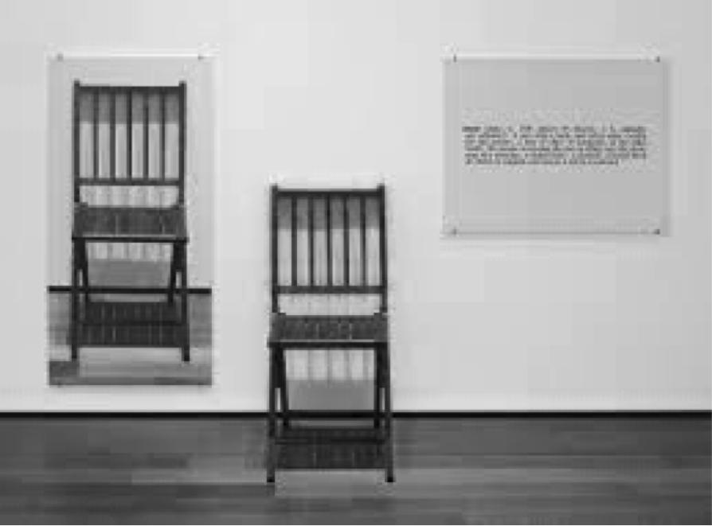

Afbeelding nr. 1
Maria met Kind in majesteit
Duccio di Buoninsegna, 1311
213cm x 396cm, olieverf op paneel
Afbeelding nr. 2
'Aanbidding der Herders', ook wel 'de Portinari-triptiek'
Hugo van der Goes, ca. 1470
middenstuk 252,7cm x 304cm, vleugels 252,7cm x 141cm
olieverf op paneel
Afbeelding nr. 3
De vijfhoek (volgens Plato het symbool van de volmaakte schoonheid)
Afbeelding nr. 4
Fechner; verdeling voorkeur voor rechthoeken met bepaalde afmetingen.
Afbeelding nr. 5
Adolf Zeising (1810-1876)
Verdeling van het menselijk lichaam
volgens de Gulden Snede.
Afbeelding nr. 6
Vitruviaanse figuur
Leonardo Da Vinci, 1490, tekening
Afbeelding nr. 7
Standbeeld Willem van Oranje, Den Haag
Louis Royer, 1848, brons
Afbeelding nr. 8
Napoleon op de handpalm van George III
James Gillray, ca. 1800, prent
Afbeelding nr. 9
"M-maybe, a Girls Picture"
Roy Lichtenstein, 1965,
152 x 152 cm, olieverf en magna op canvas
Afbeelding nr. 10
"Mao",
Andy Warhol, 1972,
208 x 157 cm, acryl, zeefdruk en olieverf op linnen
Afbeelding nr. 11
One and three chairs,
Joseph Kosuth, 1965
Afbeelding nr. 12
Visser de, A. (1986, herziene druk 2000),
Hardop kijken. Nijmegen: uitgeverij SUN (blz. 53)
Afbeelding nr. 13
Kikkerperspectief (links) en vogelperspectief (rechts)
Afbeeldingen bron: http://www.nexgenpics.nl/?p=600
Afbeelding nr. 14
"Dropped cone"
Claes Oldenburg, 2001, Keulen
Roestvrij en gegalvaniseerd staal, kunststof, balsahout;
beschilderd met polyester gelcoat12.1 m hoog, 5,8 m diameter, hoogte boven gebouw 10m.
Afbeelding nr. 15
"Zagende zaag"
Claes Oldenburg, 1996, Tokyo
Roestvrij en gegalvaniseerd staal, kunststof,
beschilderd met polyester gelcoat15.4 x 1.5 x 12.2 m
Afbeelding nr. 16
De Spiraal van Fraser,
James Fraser, 1908, in British Journal of Psychology 2-
1908 onder de titel "A new visual illusion of direction".
Afbeelding nr. 17
M.C.Escher: Autre Monde. 1947
houtsnede uit 3 blokken.
Afbeelding nr. 18a
Edward VI,
William Scrots, 1546
(National Portrait Gallery)
Afbeelding nr. 18b
Edward VI,
William Scrots, 1546
(National Portrait Gallery)
Afbeelding nr. 19a
Anamorfische straatkunst.
Babyfood' (Krijt en verf)
Julian Beever
Afbeelding nr. 19b
Anamorfische straatkunst.
Babyfood' (Krijt en verf)
Julian Beever
Afbeelding nr. 20a
Felice Varini
A: "Ellipse dans le trapè ze" B: "Quai des célestins, nr6"

Afbeelding nr. 20b
Felice Varini
A: "Ellipse dans le trapè ze" B: "Quai des célestins, nr6"
Afbeelding nr. 21
Bron: Kahneman, D. (2011),
Ons feilbare denken, pagina 108, figuur 9
Amsterdam: uitgeverij Business Contact
Afbeelding nr. 22
Beeldverhoudingen

Afbeelding nr. 23
Beeldverhoudingen
Afbeelding nr. 24
Still uit film 'Mommy', Canada, 2014
Xavier Dolan (1989 -
Afbeelding nr. 25
Kamer van Escher.
Escher in Het Paleis, Den Haag.
Afbeelding nr. 26
Interieur Sint-Bavokerk te Haarlem
Jan van de Velde (II), Jan Kralinge, 1628
ets en gravure, 15,8 cm x 23,4 cm.
Afbeelding nr. 27
Poorten van Friesland, Afsluitdijk (2008),
Maree Blok en Bas Lugthart
Afbeelding nr. 28
Overbruggen, Hoorn (2011),
Maree Blok en Bas Lugthart
Afbeelding nr. 29
David (1501/1504), Florence
Michelangelo Buonarotti
marmer, 5,17 m
Afbeelding nr. 30+31+32
Onderzoek naar eigen lengte
Fotoserie
Afbeelding nr. 33+34+35
Onderzoek naar eigen lengte
Fotoserie
Afbeelding nr. 36
Onderzoek naar eigen lengte
Fotoserie